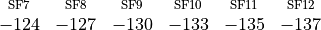
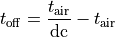

LoRaWAN Module¶
This module contains a series of classes and examples aimed at modeling the modulation and medium access technology of a LoRaWAN network. Thanks to a simple underlying physical layer model and to the regulations imposed on traffic in the unlicensed bands this technology operates on, this module can support simulations featuring a large number of devices that access the wireless channel infrequently.
The following parts of this documentation first outline how the technology works and then describe how it was translated into a system of classes in order to simulate a LoRaWAN system.
Technology¶
LoRaWAN is a Low Power Wide Area Network (LPWAN) technology built on the LoRa modulation. This technology allows a large number of devices to communicate wirelessly over long distances (in the order of 5-15 km, depending on the propagation environment) at low data rates. The typical scenario in which this technology is expected to be employed is that of an IoT network, where devices need to communicate sparsely and only need short payloads to transmit some information coming from, typically, a sensor.
LoRa¶
The basis of LoRaWAN is the proprietary Long Range (LoRa) modulation, owned by Semtech. This modulation, based on Chirp Spread Spectrum (CSS), spreads a signal over a certain band by leveraging a chirp signal that scans the available bandwidth linearly.
One of the key parameters of the modulation is the Spreading Factor (SF): this value, ranging from 7 to 12, expresses how much a packet is spread in time (i.e., how long it takes for a chirp to complete a complete scan of the available bandwidth). Transmissions using a low SF need a lower Time on Air (ToA) (assuming the same bandwidth) than packets using SF values closer to 12. The advantage of using higher SFs is in the increased sensitivity of the receiver: as an example, a transmission using SF7 that cannot be detected by a LoRa receiver may be correctly demodulated if performed using SF12. Another key feature of the modulation is the quasi-orthogonality between transmissions using different SF values: even if two packets overlap in time, a receiver may still be able to demodulate one of the packets, assuming that they are using different SF and that some restrictions on their reciprocal power are respected.
More details on how the modulation works can be found in [semtech2015modulation] (an official document explaining the modulation) and in [knight2016reversing] (a reverse engineering of the modulation by Matt Knight).
LoRaWAN¶
The LoRa Alliance first defined the LoRaWAN standard in [lorawanstandard], with the objective of creating a medium access scheme and a set of network management policies that leverage the properties of the modulation to achieve good network performance at a low price in the complexity of the devices.
The topology of a LoRaWAN network is represented in the figure Topology of the LoRaWAN architecture., where dotted lines represent a LoRa wireless link while solid lines are other kinds of high throughput, high reliability connections. It can be seen that there are three kinds of devices in a LoRaWAN network: End Devices (EDs), Gateways (GWs) and a Network Server (NS). End Devices are basic network nodes: typically inexpensive, they are constrained by low computational capabilities and are usually powered by a battery. Gateways are high-end, mains powered devices that are tasked with collecting the data transmitted by End Devices leveraging the LoRa modulation. After a packet is correctly received, it is forwarded to the Network Server via a link with high reliability and speed. The Network Server functions as a sink for data coming from all devices, and as a controller of the network that can leverage some MAC commands to change transmission settings in the End Devices.
End Devices of the most basic type are defined as Class A devices, and are currently the only kind of device supported by this module. Class A devices perform transmission in a totally asynchronous way, and open two receive windows of fixed duration after each transmission to allow the Network Server to transmit acknowledgments or MAC commands.
Another important characteristic of the standard is that it is defined to work on unlicensed bands in various regions, which usually subject transmitters to regulations on duty cycle. This fact will be explained in greater detail in the MAC layer model section of this document.
Topology of the LoRaWAN architecture.¶
Module design¶
This module comprises two main models: one for the LoRa PHY layer that needs to represent LoRa chips and the behavior of LoRa transmissions, and one for the LoRaWAN MAC layer, that needs to behave according to the official specifications.
To represent these two models, the module features two generic LoraPhy and
LorawanMac base classes. These classes are then extended by classes that
model the peculiarities of the two wireless network devices: the End Device (ED)
and the Gateway (GW). So, the PHY layers can be modeled by use of
EndDeviceLoraPhy and GatewayLoraPhy classes, while objects of class
EndDeviceLorawanMac, ClassAEndDeviceLorawanMac, and GatewayLorawanMac
are used to represent the MAC layer. A NetworkServer application can also be
installed on a node that will then administer the wireless network through the
GW’s forwarding application, Forwarder, which leverages the gateway’s LoRa
communication capabilities to forward to End Devices the Network Server’s
packets.
PHY layer model¶
The model for the PHY layer needs to take into account the two key factors of LoRa, sensitivity and orthogonality, to decide whether a transmission is received correctly or not. Besides, it also needs to be aware of how the chips implementing the modulation work, and of their architecture.
Link model¶
The link model takes into account three main components to determine the performance of a LoRa transmission:
Data about device sensitivity taken from device datasheets;
A model to account for the interference between different LoRa transmissions;
A series of assumptions regarding this interference model.
In this section, we will describe each portion of the model with a particular focus on its implementation in the code.
The LoraChannel class is used to interconnect the LoRa PHY layers of all
devices wishing to communicate using this technology. The class holds a list of
connected PHY layers, and notifies them about incoming transmissions, following
the same paradigm of other Channel classes in ns-3.
PHY layers that are connected to the channel expose a public StartReceive
method that allows the channel to start reception at a certain PHY. At this
point, these PHY classes rely on a LoraInterferenceHelper object to keep
track of all incoming packets, both as potentially desirable packets and as
interference. Once the channel notifies the PHY layer of the incoming packet,
the PHY informs its LoraInterferenceHelper right away of the incoming
transmission. After this, if a PHY fills certain prerequisites, it can lock on
the incoming packet for reception. In order to do so:
The receiver must be idle (in STANDBY state) when the
StartReceivefunction is called;The packet receive power must be above a sensitivity threshold;
The receiver must be listening on the correct frequency;
The receiver must be listening for the correct SF.
The sensitivity threshold that is currently implemented can be seen below (values in dBm):

After the PHY layer locks on the incoming packet, it schedules an EndReceive
function call after the packet duration. The reception power is considered to be
constant throughout the packet reception process. When reception ends,
EndReceive calls the IsDestroyedByInterference method of the PHY’s
instance of LoraInterferenceHelper to determine whether the packet is lost
due to interference.
The IsDestroyedByInterference function compares the desired packet’s
reception power with the interference energy of packets that overlap with it on
a SF basis, and compares the obtained SIR value against the isolation matrix
that was tabulated in [goursaud2015dedicated] and reproduced below. For
example, if the desired packet is using SF7, and it is (even partially)
overlapped to two packets using SF10, the desired signal’s energy (computed as
the product of reception power and signal duration) is compared to the summed
energy of the two interferers (computed as the product of the interferer’s power
at the receiver and overlap time). The ratio between the desired and the
interference energy from each spreading factor (considered separately) is then
compared to the table below, in which rows identify the desired signal’s SF,
while columns represent the interfering SF that is currently being considered.
If the SIR is above the tabulated threshold, the packet is received correctly
and forwarded to the MAC layer.

A full description of the link layer model can also be found in [magrin2017performance] and in [magrin2017thesis].
Gateway model¶
The chip installed on LoRa GWs needs special attention because of its
architecture: since it is characterized by the presence of 8 parallel receive
paths, it can receive multiple packets in parallel [sx1301]. This
behavior is represented in the simulator through a ReceptionPath object that
behaves as an EndDeviceLoraPhy, locking into incoming packets and comparing
them to others to determine correct reception by using the gateway’s
LoraInterferenceHelper instance. A GatewayLoraPhy, then, is essentially
a manager of this collection of ReceptionPath objects. Upon arrival of a
packet, the gateway picks a free reception path (if there are any), marks it as
occupied and locks it into the incoming packet. Once the scheduled
EndReceive method is executed, the gateway’s LoraInterferenceHelper
(which contains information used by all ReceptionPaths) is queried, and it
is decided whether the packet is correctly received or not.
Some further assumptions on the collaboration behavior of these reception paths were made to establish a consistent model despite the SX1301 gateway chip datasheet not going into full detail on how the chip administers the available reception paths:
Receive paths can be configured to listen for incoming packets on any frequency;
Receive paths can be allocated freely on the available frequencies;
Receive paths don’t need to be pre-configured to listen for a certain spreading factor (thus, point 4 of the prerequisites stated above for End Devices doesn’t apply);
If a packet is incoming and multiple receive paths are listening for the same channel, only one locks into the incoming packet;
If all reception paths listening on a channel are locked into an incoming packet and another packet arrives, the new packet is immediately marked as lost.
MAC layer model¶
The MAC models contained in this module aim at implementing the LoRaWAN
standard. To facilitate this task, a series of side classes were created to
handle headers, MAC commands, logical channels and duty cycle computations.
Furthermore, a simplified version of a Network Server (NS) is also provided in
the form of an application that can be installed on a ns-3 Node and
connected to the GWs via a PointToPoint link to also simulate a backbone
channel.
Headers, MAC commands and addressing system¶
The packet structure defined by the LoRaWAN standard is implemented through two
classes that extend the Header class: LorawanMacHeader and
LoraFrameHeader. In particular, LoraFrameHeader can include MAC commands
by leveraging the MacCommand and LoraDeviceAddress classes, that are
used to make serialization, deserialization and interpretation of MAC commands
and the LoRaWAN address system easier.
MAC commands are implemented by extending the MacCommand class. Each child
class is used to define a set of command variables, methods to serialize and
deserialize the commands inside a LoraFrameHeader, and callbacks to the MAC
layer to perform actions. This structure can facilitate the implementation and
testing of custom MAC commands, as allowed by the specification.
The LoraDeviceAddress class is used to represent the address of a LoRaWAN
ED, and to handle serialization and deserialization.
Logical channels and duty cycle¶
Since LoRaWAN operates in unlicensed bands that are subject to restrictions on
duty cycle, a series of objects were created to keep track of available
transmission time and limit transmission at the MAC layer in case the layers
above aren’t aware of these limitations. A LogicalLoraChannelHelper is
assigned to each LorawanMac instance, and is tasked with keeping track of all
available logical channels (which can be added and modified with MAC commands,
and are represented by the LogicalLoraChannel class) and is aware of the
sub-band they are in (through instances of the SubBand class).
Additionally, in order to enforce duty cycle limitations, this object also
registers all transmissions that are performed on each channel, and can be
queried by the LorawanMac instance to know the next time in which transmission
will be possible according to the regulation. If a transmission of duration
is performed by the device on a channel where the duty cycle
expressed in fractional form is , the time the device needs to
stay off is computed according to the following formula:

This time is kept track of on a sub band basis, so that if two channels are under the same regulation, a transmission on one of them will also block the other one.
The Network Server¶
The NetworkServer is an application which is running on a node that is
connected to the simulation GWs. The GWs forward incoming LoRa packets to the
NS, and expect to be given packets to transmit in the downlink to EDs by the NS.
In order to keep track of all players in the network, the NS keeps two lists of
DeviceStatus and GatewayStatus objects, which represent the current
status of each ED and GW in the network, respectively. These objects are used to
keep track of downlink packets that will need to be sent during the ED’s receive
windows, and they also hold pointers to the Mac layer instances of each GW. This
is done in order to be able to perform queries on the gateway’s current duty
cycle limitations and always forward downlink packets to gateways that will be
able to transmit the packet in the LoRa network. The current iteration of the
Network Server only sends downlink packets to devices that require an
acknowledgment, ignoring the contents of the packet and of MAC commands it may
contain. Transmission is performed on the first receive window whenever
possible, and the second receive window is used only when no more resources are
available to leverage the first chance to respond to the device. More complex
and realistic NS behaviors are definitely possible, however they also come at a
complexity cost that is non-negligible.
Scope and Limitations¶
Since this is still a first version of the module, a few caveats are listed below.
Inter-protocol interference¶
Since the LoraChannel class can only be connected to LoRa PHY layers, the
model is currently unable to account for interference by other technologies.
It’s expected that it will become possible, in the future, to handle
inter-protocol interference by leveraging the SpectrumChannel class, once
more accurate models of how interference affects LoRa signals become available.
Inter-channel interference¶
Interference between partially overlapping channels is not checked for. Furthermore, there currently is no model to account for interference between signals using different bandwidths.
Network Server¶
The current implementation of the Network Server tries to provide a general structure to handle EDs and GWs in a network, but still lacks some possibly complex code to simulate advanced features like different Adaptive Data Rate (ADR) algorithms, responding to the ED’s MAC commands and supporting join procedures. Other limitations of the Network Server is that it doesn’t employ a protocol to communicate with the Gateways (since no official ones exist), and that it informs the gateway in real time about downlink messages it needs to send (in other words, no “booking” of the gateway resource is done in advance, and downlink packets take priority over incoming packets at the gateway).
As of now, the Network Server implementation should be considered as an experimental feature, prone to yet undiscovered bugs.
Device Classes¶
Currently, only Class A End Devices are supported.
Regional parameters¶
Since LoRaWAN parameters like default channel lineup and MAC command
interpretations vary based on the operational region of the network,
LorawanMacHelper includes methods to specify the region. While the current
implementation is predisposed to support different configurations of the network
based on the region it’s meant to be operating in, currently only the EU region
using the 868 MHz sub band is supported.
MAC layer details¶
Some details that are not crucial for the evaluation of the system performance of a network still need to be implemented. These include:
Frame counters, both at the End Devices and at the Network Server’s DeviceStatus
Proper setting of ADR flags (no ADR mechanism is implemented still)
Join procedure management (both at the NS and at the EDs)
Usage¶
A typical usage of the model follows some typical ns-3 paradigms, like the usage of helpers to configure a complex network. This section illustrates the setup of a LoRaWAN network using the module and some other side classes that weren’t described in the previous sections because they are mainly used to configure the network.
Helpers¶
The lorawan module features helpers to configure the PHY and MAC layers on a
large number of devices. The two layers are split in two different classes,
LorawanMacHelper and LoraPhyHelper, which can be leveraged by a
LoraHelper object to fully configure a LoRa device (both for EDs and for
GWs). Since the helpers are general purpose (i.e., they can be used both for ED
and GW configuration), it is necessary to specify the device type via the
SetDeviceType method before the Install method can be called.
The LorawanMacHelper also exposes a method to set up the Spreading Factors used
by the devices participating in the network automatically, based on the channel
conditions and on the placement of devices and gateways. This procedure is
contained in the static method SetSpreadingFactorsUp, and works by trying to
minimize the time-on-air of packets, thus assigning the lowest possible
spreading factor such that reception by at least one gateway is still possible.
It should be noted that this is an heuristic, and that it doesn’t guarantee that
the SF distribution is optimal for the best possible operation of the network.
In fact, finding such a distribution based on the network scenario is still an
open challenge.
Attributes¶
Currently, the following attributes are available:
IntervalandPacketSizeinPeriodicSenderdetermine the interval between packet sends of the application, and the size of the packets that are generated by the application.
Trace Sources¶
Various trace sources can be used to keep track of events throughout the simulation, mainly regarding the lifetime of a packet. At the PHY layer, the following trace sources are exposed:
In
LoraPhy(bothEndDeviceLoraPhyandGatewayLoraPhy):StartSending, fired when a PHY layer begins transmitting a packet;PhyRxBegin, fired when a PHY layer becomes locked on a packet;PhyRxEnd, fired when a PHY’s reception of a packet ends;ReceivedPacket, fired when a packet is correctly received;LostPacketBecauseInterference, fired when a packet is lost because of interference from other transmissions;LostPacketBecauseUnderSensitivity, fired when a PHY cannot lock on a packet because it’s being received with a power below the device sensitivity;
In
EndDeviceLoraPhy:LoraPacketBecauseWrongFrequencyis fired when an incoming packet is using a frequency that is different from that on which the PHY is listening;LoraPacketBecauseWrongSpreadingFactoris fired when an incoming packet is using a SF that is different from that for which the PHY is listening;EndDeviceStateis used to keep track of the state of the device’s PHY layer.
In
GatewayLoraPhy:LostPacketBecauseNoMoreReceiversis fired when a packet is lost because no more receive paths are available to lock onto the incoming packet;OccupiedReceptionPathsis used to keep track of the number of occupied reception paths out of the 8 that are available at the gateway;
In
LorawanMac(bothEndDeviceLorawanMacandGatewayLorawanMac):CannotSendBecauseDutyCycleis used to keep track of the number of when a packet coming from the application layer cannot be sent on any of the available channels because of duty cycle limitations;
In
EndDeviceLorawanMac:DataRatekeeps track of the data rate that is employed by the device;LastKnownLinkMarginkeeps track of the last link margin of this device’s uplink transmissions; This information is gathered through theLinkCheckMAC commands;LastKnownGatewayCountkeeps track of the last known number of gateways that this device is able to reach; This information is gathered through theLinkCheckMAC commands;AggregatedDutyCyclekeeps track of the currently set aggregated duty cycle limitations;
PacketSentinLoraChannelis fired when a packet is sent on the channel;
Examples¶
simple-lorawan-network-example¶
This example is used to showcase how wireless communication between a device and a gateway happens: one LoRa ED is configured to send a packet, and a GW receives it. When logging is enabled, the various steps that are needed to send a packet from the APP layer of an ED to the MAC layer of a GW can be observed.
network-server-example¶
This example builds on the simple-lorawan-network-example to add a Network
Server and multiple EDs and GWs to the scenario. This example works as a
showcase for how communication between the End Devices and the Network Server
happens.
complete-lorawan-network-example¶
This example shows how to configure a whole LoRaWAN network using the ns-3
lorawan module. A big network featuring several thousand devices and tens of
gateways is built, and each device is equipped with a PeriodicSender
application that periodically sends a packet to the NetworkServer through the
Gateways. The example keeps track of the sent and received packets, and computes
some statistics at the end of the simulation. No Network Server is used in this
simulation, since performance metrics are collected through the GW trace sources
and packets don’t require an acknowledgment.
Tests¶
Tests are contained in the lorawan-test-suite.cc file. The tests currently
cover the following classes:
LoraInterferenceHelperLoraDeviceAddressandLoraDeviceAddressHelperLoraFrameHeaderandLorawanMacHeaderReceivePathandGatewayLoraPhyLogicalLoraChannelandLogicalLoraChannelHelperLoraPhyEndDeviceLoraPhyandLoraChannel
References¶
- magrin2017performance
D. Magrin, M. Centenaro and L. Vangelista, Performance Evaluation of LoRa Networks in a Smart City Scenario, in Proc. of the IEEE International Conference on Communications, May 2017.
- magrin2017thesis
D. Magrin, Network level performances of a LoRa system, December 2016. Available: http://tesi.cab.unipd.it/53740/
- sx1301
Semtech, SX1301 Datasheet.
- goursaud2015dedicated
C. Goursaud, J. M. Gorce, Dedicated networks for IoT: PHY/MAC state of the art and challenges, EAI endorsed transactions on Internet of Things, 2015.
- semtech2015modulation
Semtech Corporation, AN1200.22 LoRa Modulation Basics, May 2015, Online. Available: http://www.semtech.com/images/datasheet/an1200.22.pdf
- knight2016reversing
M. Knight, Reversing LoRa, Online. Available: https://github.com/matt-knight/research
- lorawanstandard
N. Sornin, M. Luis, T. Eirich, T. Kramp, and O. Hersent, LoRaWAN Specifications, LoRa Alliance, Tech. Rep., 2015.